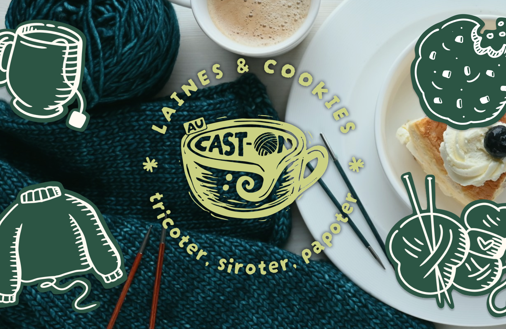
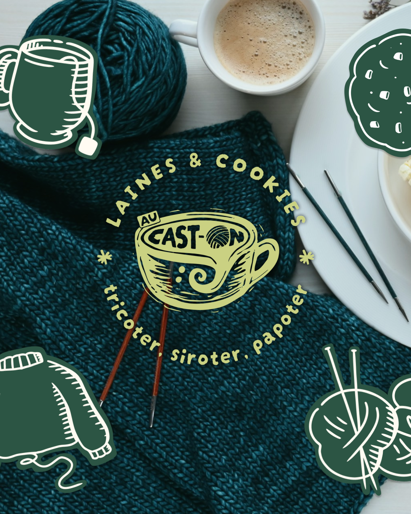
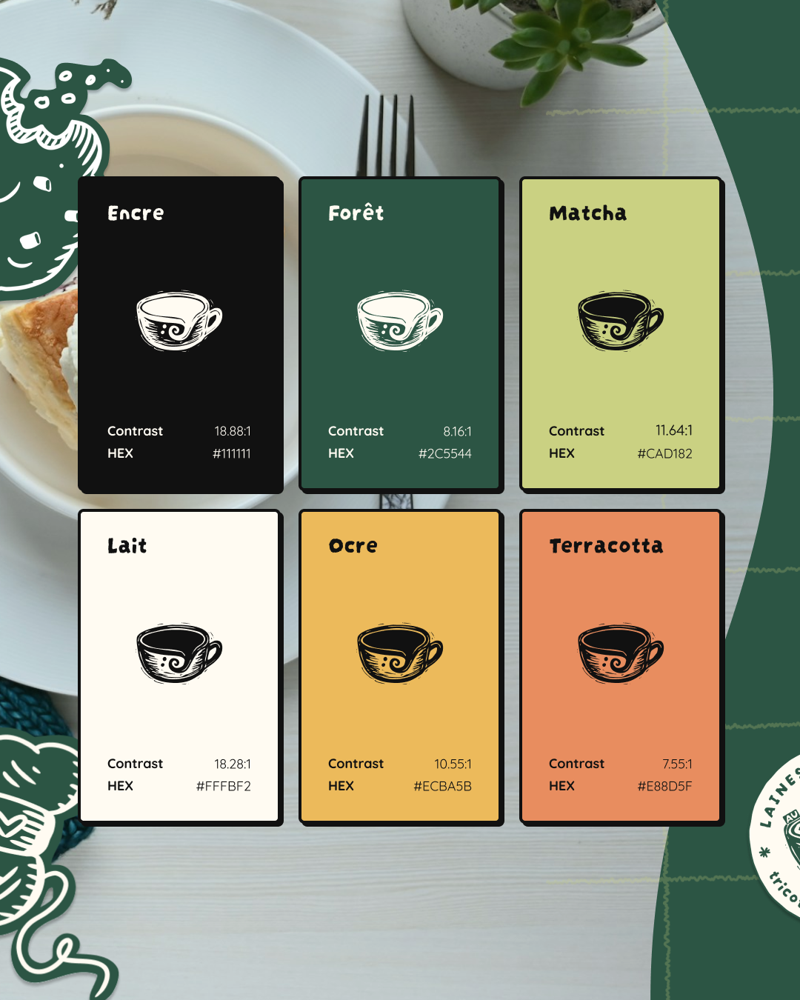
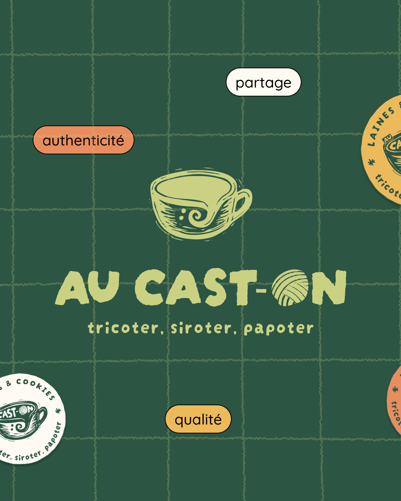
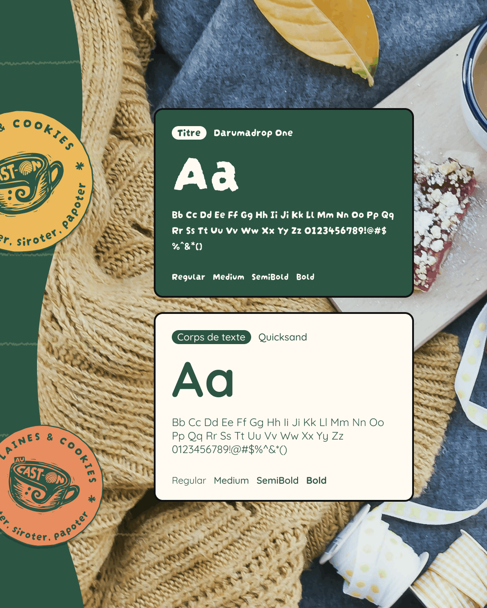
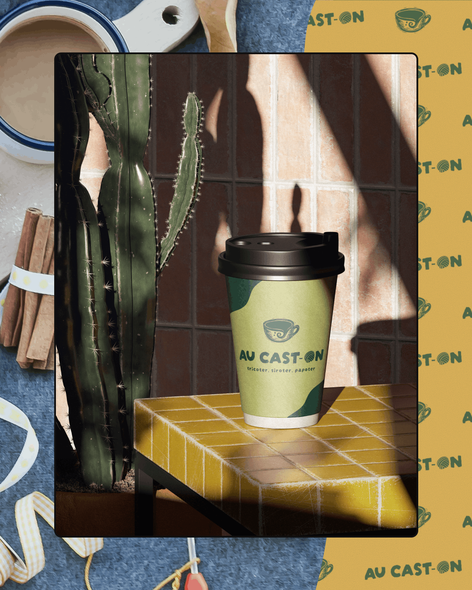
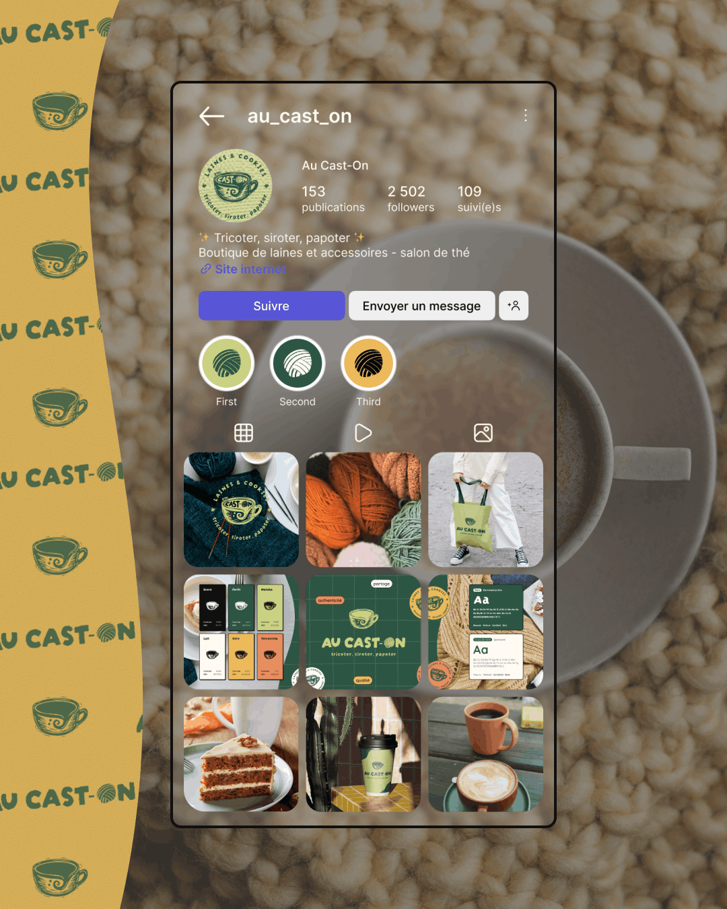
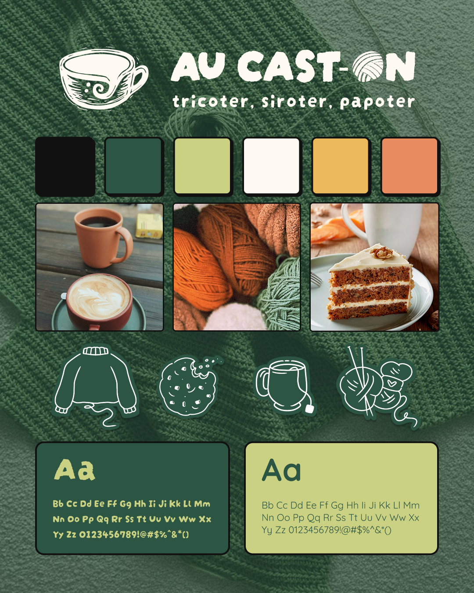

Au Cast-On
Création d'identité visuelle pour le lancement d'Au Cast-On, boutique de laines et salon de thé à Lille.
- Boutique de laines
- Salon de thé

Présentation
Elise et Estelle m'ont confié la création de leur identité visuelle pour leur nouveau projet de commerce lillois : Au Cast-On, une boutique de laines qui non seulement propose à la vente du fil de qualité pour le tricot et le crochet, mais se différencie surtout par son espace salon de thé où les client.es pourront se poser pour avancer sur leurs projets laineux autour d'une bonne boisson chaude.
À partir d'une première ébauche de logo réalisée à la linogravure par leurs propres soins, nous avons travaillé ensemble sur l'image globale de la marque pour leur assurer dès l'ouverture prochaine de leur boutique une identité visuelle cohérente alignée avec ses valeurs de partage et d'authenticité.
Cible
Public majoritairement féminin entre 25-50 ans ; Passionné.es de tricot et crochet ; Amateur.ices de DIY
Ambiance visée
- Coloré
- Chaleureux
- Cosy
Périmètre d'intervention
- Proposition de 3 planches d'inspiration
- Finition du logo principal + création de ses déclinaisons
- Définition du système typographique et de la palette de couleurs






